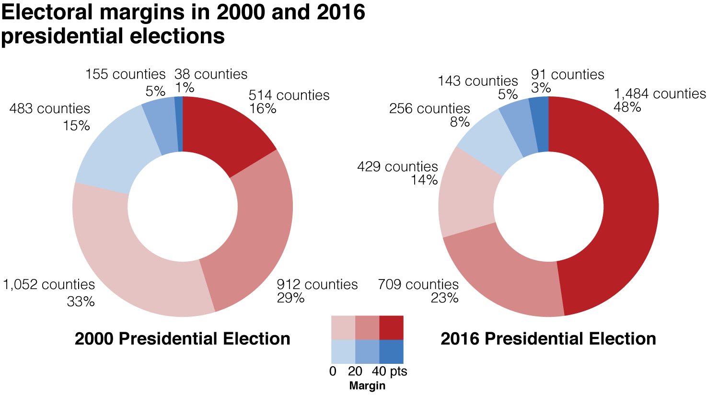
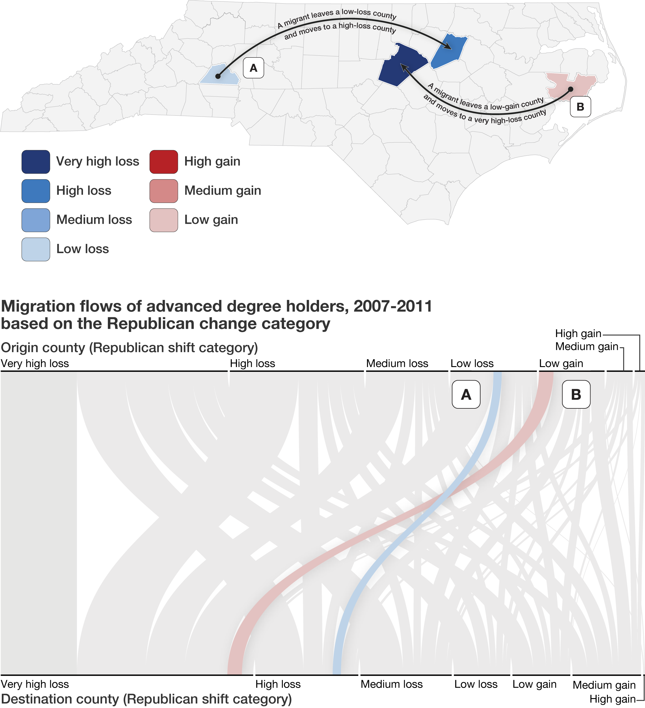
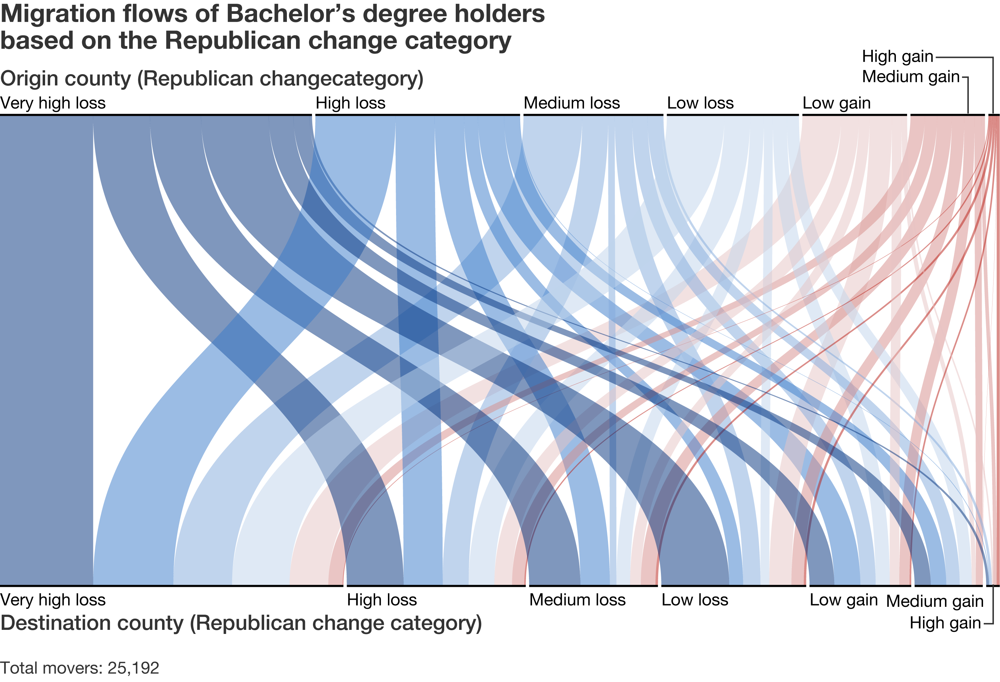
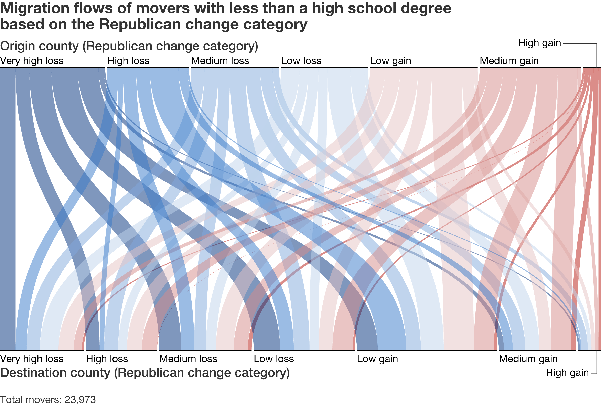
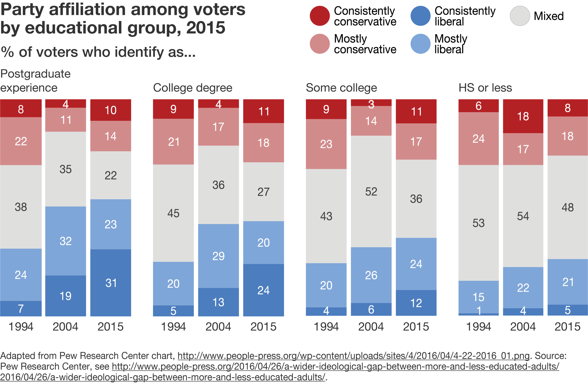
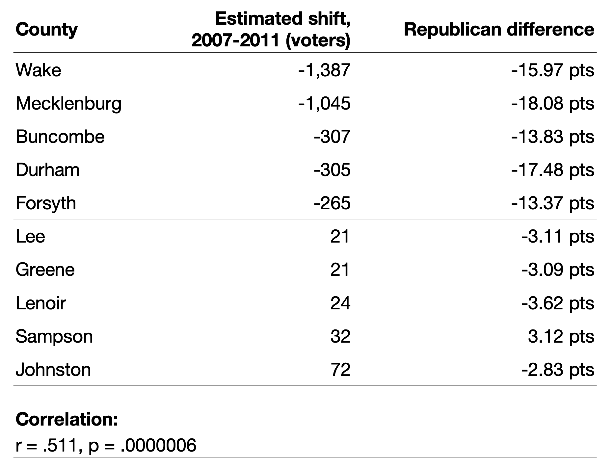

I began thinking about this project in early 2016, long before anyone thought it possible for Donald Trump to be president. After I and many friends left Mississippi post-college seeking opportunities around the broader Southeast and United States (and recognizing the impact of college education on partisanship), it occurred to me that every time a Democratic voter moved to some urban center (likely a Democratic one), Mississippi would be left with one fewer blue vote, and thus, a little more conservative. The exodus of educated, young people, commonly referred to as "brain drain," is not limited to Mississippi: young people across the United States flock to urban centers in search of better job opportunities, communities that share their values, and sometimes their very safety. So what would it mean for the American electoral landscape if such a pattern drew like-minded people to the same places, who then are likely to vote similarly?
Taking a largely data-driven approach, I focused on the state of North Carolina and worked to answer three questions. How has the political landscape in North Carolina changed over the last five presidential elections? What are the general patterns of internal migration in recent years within the state of North Carolina? And finally, does the data point to a discernible relationship between them?
Feel free to explore the parts of this project that interest you most. I've provided a bit of background to situate the research, as well as the results of the electoral and migratory analysis (with a bunch of fun maps and data visualizations 😍). Reach out to me at katip@uoregon.edu for feedback, questions, or any code I used for the analysis.
There is no shortage of reports showcasing the economic and population losses of rural America. Just months before Donald J. Trump was elected president, The Atlantic published yet another story recounting a familiar tale of a rural American-West city. Fossil, Oregon was struggling to retain its youth, opportunities, and economic vigor, and the trend is not specific to any one region. Rethink Mississippi, an online publication offering critical analysis of issues facing today’s Mississippi, lamented the insistent outmigration from the state: “New Census data, same old story: People keep leaving Mississippi.” Meanwhile, The New York Times published a piece exploring the economic impact of the cluster economies that dominate the coasts and leave rural economies struggling.
The proliferation of such stories validates recent findings from the U.S. Department of Agriculture, which noted that rural America experienced its first year of absolute population decline in 2012, a trend that endured for six years before small population increases brought it to a close.
The national conversation, which is dominated by voices largely outside of rural America, focuses on economics: where do people have the best opportunities to maximize their economic potential? Where are the most robust job markets? The privileging of the economic makes some sense, given that economic motivators are the primary reason people move.1
However, treating population change (and internal migration) as strictly economic issues overlooks a central piece of the equation: when people move, they carry their votes with them. Importantly, migration isn't random. Instead, as Ryan Enos notes, "the complete freedom to move — highly valued in free societies — is the freedom to segregate."2 Patterns of migration are products of mobility and access, which are themselves influenced by characteristics such as education and income. Those very same characteristics are deeply tied to political partisanship, meaning that internal migration has the potential to shape the American political landscape.
That's the subject of Bill Bishop's book, The Big Sort. He argues that migration trends between 1970 and 2008 are the products of people's desire to live among like-minded people, and he makes the case using landslide counties as a measure, which by his definition are counties where a candidate wins by more than 20 points (we'll come back to that definition later).
He emphasizes that the change is taking place at the neighborhood level, an idea that Agnew and Muscará support as well, writing that, "not only is American politics increasingly polarized ideologically, […] but the country itself is increasingly geographically polarized politically […] at the scale of counties, suburbs, and municipalities."3
Research undertaken by scholars such as Iris Hui, Wendy Tam Cho, James Gimpel, and others suggests that voter migration is real. If we are to seriously contend with the consequences of such a trend, we need to dive into the data. Let's first take a look two elections in North Carolina – the 2000 and 2016 presidential elections – to examine the evolution of spatial-political polarization in the state.
2000 Total Traditional Landslide Counties: 51
(40 Republican wins, 11 Democratic wins)
2000 Total Mega-Landslide Counties: 6
(all Republican wins)
2000 Total Traditional Landslide Counties: 51
(40 Republican wins, 11 Democratic wins)
2000 Total Mega-Landslide Counties: 6
(all Republican wins)
A helpful metric for considering polarization is the landslide victory, which is defined by Bill Bishop in his book The Big Sort as an election where one candidate wins by more than 20 points (FiveThirtyEight considers elections with margins higher than 20 points to be a landslide, as does The New York Times.)
The problem with such a definition, however, is that it conceals the heterogeneity of landslide counties. While some margins sit just above 20 points, others soar beyond 60 (a point also highlighted by the above FiveThirtyEight piece).
It's useful to add an additional category: the mega-landslide, or an election where the margin of victory exceeds 40 points. In the above map of the 2000 presidential election, there are 51 traditional landslide counties (78% of which were Republican, and the other 22% were Democratic). Of the 51 landslide counties, 6 are mega-landslides. Since 2000, both the numbers of traditional landslide counties and mega-landslide counties have increased considerably.
2016 Total Traditional Landslide Counties: 63
(52 Republican wins, 11 Democratic wins)
2016 Total Mega-Landslide Counties: 26
(24 Republican wins, 2 Democratic wins)
2016 Total Traditional Landslide Counties: 63
(52 Republican wins, 11 Democratic wins)
2016 Total Mega-Landslide Counties: 26
(24 Republican wins, 2 Democratic wins)
From 2000 to 2016, the total number of landslide counties jumped from 51 to 63, resulting in an increase of approximately 20%. More notably, the number of mega-landslide counties leapt 433%, from 6 to 26, and heavily favor the Republican candidate. Nearly 83% of all the landslide counties (traditional and mega-landslides) were won by Donald Trump, and an overwhelming majority of mega-landslides were red as well (92%).
The evolution over time reveals that while Republican and Democratic wins as a whole have only wavered slightly, the number of Republican-won mega-landslide counties has exploded.
Importantly, it's not just a trend in North Carolina. Counties across the United States have seen striking increases in Republican-won mega-landslide counties.

The electoral landscape is changing, and it is increasingly characterized by mega-landslide counties. That elections are becoming less competitive should certainly raise flags among party leaders and the public. The important question here is whether or not it can be tied to recent trends of migration, our next subject of inquiry.
Mapping migration among each of North Carolina's 100 counties is not only complex, but also fails to yield meaningful results. So instead of mapping migratory flows between the counties individually, I broke them into categories based on specific criteria. The most interesting category proved to be the Republican change category.
By substracting George Bush's share in 2000 from Donald Trump's share in 2016, I came to what I'm calling the GOP change value, and it's important for a couple of reasons. First, the value captures change over time, rather than just taking a snapshot from individual elections. We're able to place electoral change (and the degree of the change) in relation to migration. Second, as we saw in the previous section, there have been real increases in Republican margins, so it's useful to situate migratory data around that change. Using the map below, we can really see the geography of those shifts (though it's important to remember that counties where Republicans have lost ground are not necessarily Democratic counties — they've simply showed movement over time towards the Democratic party).
Total Counties With Republican Losses: 36
Total Counties That Became Less Competitve: 70
Total Counties With Republican Losses: 36
Total Counties That Became Less Competitve: 70
Once we've put each county in its correct category, we can map flows between those categories, and the best way to visualize those flows is through the use of sankey diagrams. The example diagram below shows how Person A, who moved from a low-loss to a high-loss county, would show up on a sankey diagram.
Using this visualization method, we can see the way that migration differs among groups. For example, below we have the summary of migration among those with a Bachelor's degree. It's evident right away that most of those people already live in a county where the Democratic party has seen improved performance. In fact, a whopping 86% of migrants who left a very-high-loss county (those dark blue flow lines) moved to another county where Republicans have lost ground.
Meanwhile, migration patterns of those with less than a high school degree show striking differences. Not only are those migrants not so highly concentrated in counties where Republicans have seen poor performance in recent years, only 38% of them moved between two "loss" counties, as compared with 65% of those with a Bachelor's degree.
Also of interest is the distribution of people among those counties, and simply showing total migration flows absent that important context betrays another layer of complexity. In the chart below, you'll find the the total registered voting population of each county (based on December 2011 estimates) in the state of North Carolina compared to the proportion of each county type. For example, Democratic mega-Landslide counties comprised only 3% of North Carolina's counties, but those counties hold 23.5% of the state's total population. It's evident then that despite few Democratic county-level victories, Democratic counties tend to be more vote-rich and represent more constituents than their Republican counterparts.
The only way we can determine with any certainty that a relationship exists between electoral change and internal migration is if we know the partisan preferences of migrants, in addition to detailed records of their origin and destination counties (which we don't). Since we don't have that data, we can only make guesses about party affiliation based on other characteristics, something that Plane and Jurjevich did in a 2012 paper.3
Let's take a look at one more dataset. We are increasingly aware that as voters become more educated, they also become more reliable Demoratic voters. This data, initially published by Pew Research Center in 2014, shows the relationship between education and partisanship in North Carolina specifically.
Because the migration dataset also reveals the educational attainment of movers, and because we know how education shapes political preferences in North Carolina, we can make a coarse inference about what the results could potentially be. I applied the proportions outlined by Pew Research Center to each educational group. So for example, if 100 people with advanced degrees moved to Durham county, I would estimate that 58 of them would be Democrats and 32 of them would be Republicans, ultimately leaving Durham county with 26 more Democratic voters.
It's important to highlight that such a method is far from a perfect one. The original data from the U.S. Census is incomplete and has significant margins of error, it leaves out some migrants, and because Pew Research Center classified somewhere between 10 to 20 percent of all those surveyed as having "mixed" political preferences, some movers are most certainly left out.
What we see, however, is a strong statsitical relationship between migration and on-the-ground change. The table below provides a look at 10 counties: five counties with the highest calculated shifts favoring the Democratic party and five with the highest calculated shifts favoring the Republican party. Indeed, we find that as the estimate favors Democratic candidates, so do on-the-ground results.
My hope is that I've made the case for two key takeaways: the electoral landscape is changing, and we've got to pay attention to it if we are to successfully navigate our political future. Additionally, though data restrictions keep us from arriving at concrete conclusions about the relationship between migration and electoral change, we've got sufficient evidence to take seriously the possibility that migration could play some role in that evolution.
1Borjas, George, Stephen Bronars, and Stephen Trejo. 1992. "Self-selection and internal migration in the United States." Journal of Urban Economics 32 (2): 159-185.
1Greenwood, M. J. 1975. "Research on internal migration in the United States: a survey." Journal of Economic Literature 397-433.
1Greenwood, M. J., G. L. Hunt, and J. M. McDowell. n.d. "Migration and employment change: empirical evidence on the spatial and temporal dimensions of the linkage." Journal of Regional Science 223-234.
1Long, L. H. 1988. Migration and residential mobility in the United States. New York, NY: Russell Sage Foundation.
1Morrison, Philip, and William Clark. 2011. "Internal migration and employment: macro flows and micro motives." Environment and Planning A: Economy and Space 1948-1964.
2Enos, Ryan. 2017. The Space Between Us. Cambridge, MA: Harvard University Press.
3Agnew, John, and Luca Muscarà. 2012. Making Political Geography. John Agnew + Luca Muscarà. 2012. Plymouth: Rowman & Littlefield Publishers, Inc.
4Jurjevich, Jason, and David Plane. 2012. "Voters on the move: The political effectiveness of migration and its effects on state partisan composition." Political Geography 31: 429-443.
Bishop, Bill. 2009. The Big Sort: Why the Clustering of Like-Minded America is Tearing Us Apart. Mariner Books.
Gimpel, James, and Iris Hui. 2015. "Seeking politically compatible neighbors? The role of neighborhood partisan composition in residential sorting." Political Geography 48: 130-142.
Holbrook, Thomas. 2016. Altered States: Changing Populations, Changing Parties, and the Transformation of the American Political Landscape. Oxford University Press.
I pulled the 2016 election data from Dave Leip's Election Atlas, the 2000 election data from American University's School of Public Affairs, and the shapefiles from the U.S. Census Bureau. The migration data came from the U.S. Census Bureau.
Feel free to reach out with questions or comments at katip@uoregon.edu.
I'm more than happy to share data, code, and sources. For more on what I'm up to, check out my portfolio.